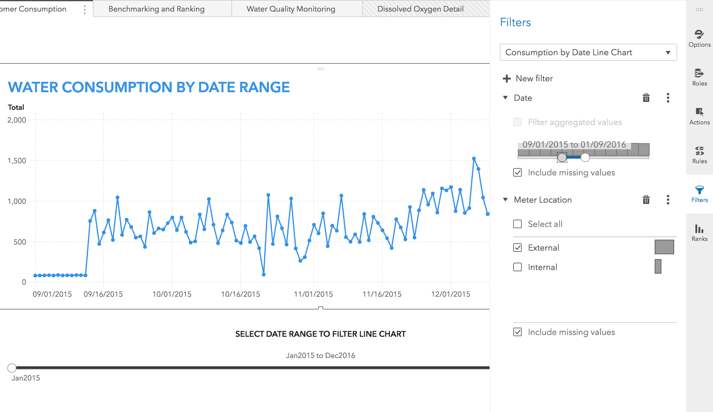
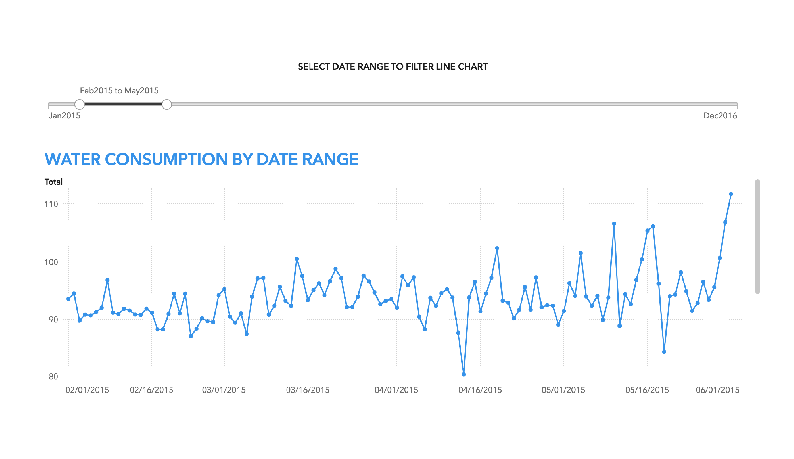
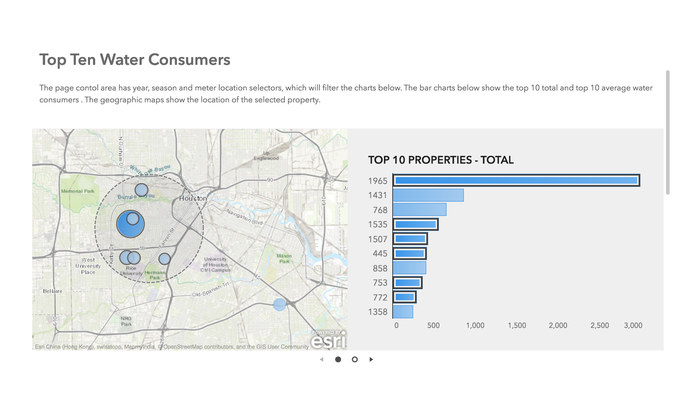

Preset filters are useful when you want to subset the data for a specific audience, or hide data that should not be shared. Preset filters can also improve the performance of your reports. You define preset filters during report creation and they cannot be modified by your audience. In SAS Visual Analytics, these filters include data source filters and the filters and rankings that you create on the Filters and Ranks panes.
Interactive filters enable your audience to explore the data and to tailor the report data to their own interests. Interactive filters can be set or modified by your audience. These filters include prompts and object interactions such as filtering and linked selection. When you include filters in your report, it is important to carefully consider the number, placement, and actions of the filters. Use instructive titles on the prompts or interactive objects to explain the existence of the filters, how to use them, and which elements of the report are affected.
When you use prompts, don’t overload the prompt area with too many filters. If you have many prompts or the report is intended for users on mobile devices, consider placing the prompts inside a prompt container.
When you create an object that has filter interactions, place it at the top of the page and to the left of the objects that it affects (or to the right in cultures that read right-to-left). Linked selection interactions highlight the relationships between the data in related visuals.
